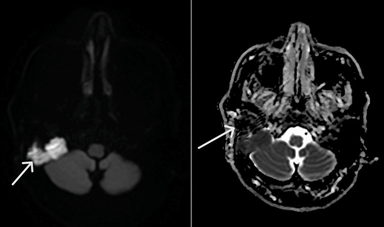

720 — Xương đá & cholesteatoma: scutum, DWI & mặt / Temporal bone
Tags: pattern:cholesteatoma vung:xuong-da protocol:MRI-non-EPI
Mức chắc chắn (certainty): tổng hợp y văn (literature synthesis) — nhóm tự biên từ y văn mở, chưa gắn ca nguyên văn đơn lẻ.
1. Tổng quan — keratin đặc + ăn xương + liệt VII
- Cholesteatoma: biểu mô sừng tích tụ (Prussak/thượng nhĩ) — TẠI SAO non-EPI DWI sáng từ ≥ 2–3 mm: keratin đặc hạn chế khuếch tán; mô hạt/viêm DWI tối.
- Ăn mòn tường thượng nhĩ (scutum) + chuỗi xương con — TẠI SAO nghe kém dẫn truyền + liệt VII: u ăn ống Fallop + đè chuỗi.
- SSCD (hở ống trên): Pöschl/Stenvers mới thấy — TẠI SAO axial thường sót: ống nằm chéo mặt cắt.
2. Gamut chảy tai/nghe kém/liệt mặt (Gamut)
- Mòn scutum + Prussak + DWI sáng: cholesteatoma — mổ tiệt căn (theo dõi DWI sau mổ!).
- Liệt VII ngoại biên + DWI sáng + mòn ống Fallop: cholesteatoma biến chứng — mổ cấp cứu + bảo tồn VII.
- Chóng mặt + tiếng vang + hở ống trên: SSCD — Pöschl/Stenvers + bít ống.
- Mô hạt sau mổ DWI tối: viêm — theo dõi, đừng mổ lại vội.
3. Bảng so sánh phân biệt (ma trận đối chiếu)
| Thực thể (entity) | Hình ảnh điển hình | Chốt vào (rule-in) | Chốt loại (rule-out) | Gợi ý xác nhận |
|---|---|---|---|---|
| Cholesteatoma | Mòn scutum + DWI sáng ≥ 2–3 mm | Keratin + ăn xương + DWI (+) | DWI tối → mô hạt | Mổ + DWI theo dõi |
| Viêm/mô hạt | Dày niêm + không mòn + DWI tối | Không ăn xương + DWI (−) | Mòn + DWI (+) → cholesteatoma | Kháng sinh + theo dõi |
| SSCD | Hở ống trên Pöschl + chóng mặt tiếng vang | Hở + VEMP (+) + thính lực | Mòn thượng nhĩ → cholesteatoma | Bít ống khi nặng |
| Liệt VII do u | Mòn Fallop + DWI sáng + HB III | Liệt ngoại biên + u ăn ống | Liệt trung ương → não | Mổ + bảo tồn VII |

CT mòn chũm + T2 sáng + DWI sáng/ADC tối. Nguồn: Kaimal et al., Cureus 2026 Fig. 1–3, CC BY 4.0.4. Protocol xương đá
- CT 0,5 mm + MRI non-EPI DWI khi chảy tai mạn/liệt mặt; Pöschl/Stenvers khi nghi SSCD.
flowchart TD
A[Chảy tai/liệt mặt] --> B{Mòn scutum + DWI?}
B -->|Sáng ≥2-3mm| C[Cholesteatoma: mổ]
B -->|Tối| D[Mô hạt: theo dõi]
5. Cạm bẫy
- EPI DWI méo nền sọ giả âm/dương — non-EPI + ngưỡng 2–3 mm.
- Liệt Bell tưởng VII ngoại biên — chảy tai/mòn xương là CT/MRI ngay (đừng steroid mù!).
- Tồn dư sau mổ tái phát — DWI định kỳ 1–2 năm (mô hạt DWI tối!).
6. Tự lượng giá — Blind Quiz
Ca 1 — Ông 72 tuổi liệt mặt phải 8 tháng, không chảy tai. Đọc CT + DWI.
- Hỏi: mòn ở đâu? DWI nói gì? Bell hay u? Mổ gì?
Bấm để hiện đáp án
- Dấu hiệu (findings): mòn chũm + ống Fallop + DWI sáng/ADC tối.
- Chẩn đoán (diagnosis): cholesteatoma chũm biến chứng liệt VII (HB III) — bóc toàn bộ xương đá + bịt (không phải Bell!).
- Nguồn: Kaimal et al., Fig. 1–3, CC BY 4.0.
Ca 2 — Sau mổ chũm + DWI tối + không mòn mới: tồn dư hay mô hạt? (Bảng mục 3.)
Bấm để hiện đáp án
- Mô hạt: theo dõi DWI định kỳ (sáng ≥ 2–3 mm mới là tồn dư).
Bài liên quan chéo
- 700 – Tổng quan Đầu Cổ
- 235 – Thái dương & xoang (vôi nấm)
- 217 – CPA (lan hố sau)
Không dùng để chẩn đoán độc lập khi chưa có người hướng dẫn.